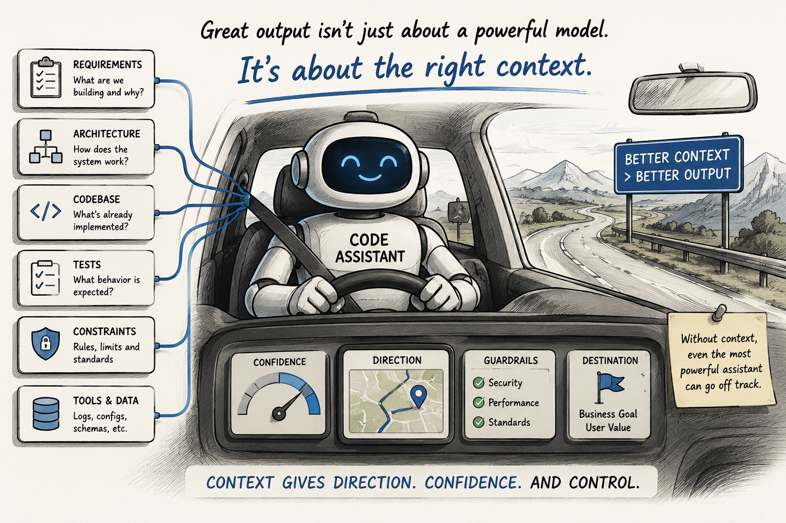
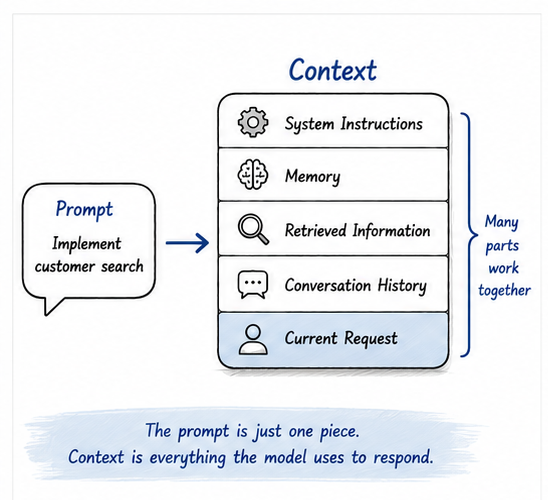
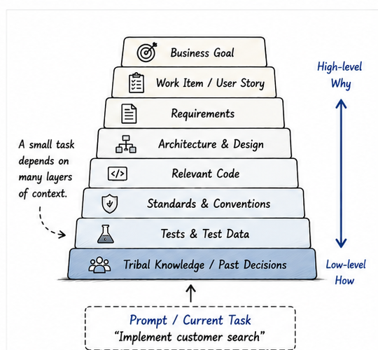
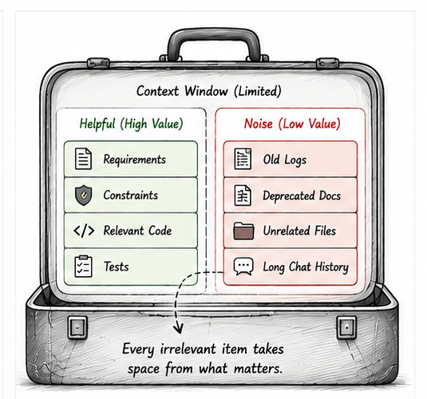
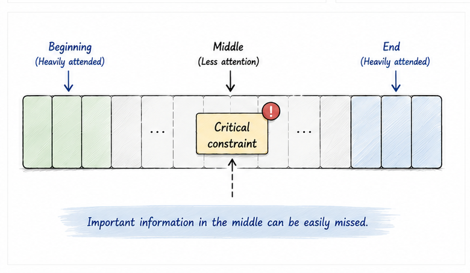
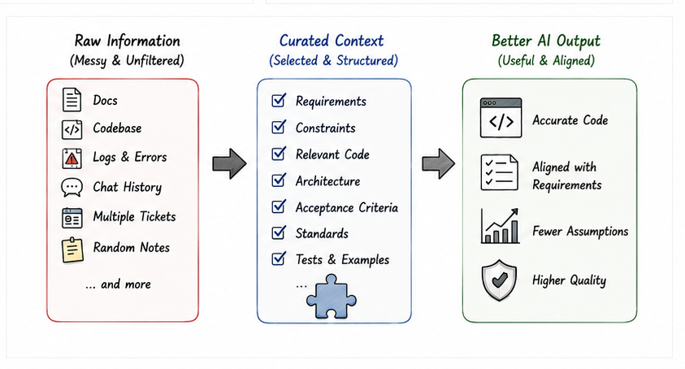

This article is part of the AI-Assisted Software Engineering series. Use the series guide to follow the complete reading path.
One day your AI assistant feels like a senior engineer.
It understands the architecture. It generates clean code. It suggests improvements you had not considered. It seems to understand exactly what you are trying to build.
The next day, the same assistant appears completely lost.
It misunderstands requirements. It proposes solutions that violate architectural principles. It generates code that clearly does not fit the system.
Many developers conclude that AI is unreliable.
I think they are often diagnosing the wrong problem.
The model did not suddenly become smart yesterday and weak today.
The context changed.
Understanding that distinction may be one of the most important skills in AI-assisted software development.
The Biggest Misconception About AI
When AI-generated code is poor, many engineers immediately start tweaking prompts.
They add more instructions. They try different wording. They search for better prompting techniques.
Sometimes that helps.
But in many cases, the prompt was never the real problem.
The context was.
Consider a simple request:
Implement customer onboarding.
Most experienced engineers would immediately have questions.
- Which customer?
- What type of onboarding?
- What systems are involved?
- What security requirements exist?
- What integrations are required?
- What are the acceptance criteria?
Without this information, even a strong engineer would struggle to produce the right solution.
Yet we often expect AI to succeed with exactly this level of ambiguity.
The reality is simple:
A prompt is the question. Context is everything needed to answer that question correctly.
That difference matters.
A better prompt may improve wording. Better context improves understanding.

What Exactly Is Context?
Before talking about AI, it helps to talk about context itself.
In simple terms, context is the surrounding information that helps determine meaning.
Consider the statement:
The bank is closed.
Without additional information, the meaning is ambiguous. Are we talking about a financial institution, or the side of a river?
Now add context:
The bank is closed because of a public holiday.
Suddenly the meaning becomes clear.
The statement did not change. The surrounding information changed.
Humans rely on context constantly. It helps us interpret information, remove ambiguity, and make better decisions.
The same principle applies to AI systems.
Context in AI Systems
When we ask ChatGPT, Claude, Gemini, Codex, Claude Code, or any coding assistant a question, the model does not answer from some permanent understanding of our project.
It answers from the information available to it at that moment.
Depending on the platform and tools being used, that context may include several layers:
- System instructions: rules that define how the assistant should behave.
- Memory: preferences, project details, repeated corrections, or longer-term continuity.
- Retrieved information: repository files, documentation, wiki pages, schemas, API specs, or search results.
- Conversation history: earlier clarifications, constraints, corrections, and examples.
- Current request: the task being asked right now.
Interestingly, the current request is often the smallest part of the full context.
That leads to an important observation:
AI does not answer based only on your prompt. It answers based on the entire context available at that moment.
The prompt is one part of the context, not the whole context.
Context in Software Engineering
Now bring this closer to software development.
When we ask an AI assistant to implement a feature, the context extends far beyond the task itself.
Consider another simple request:
Implement customer search.
To generate a high-quality solution, the assistant may need information from many layers of software engineering context.

It may need functional context:
- What problem are we solving?
- What are the acceptance criteria?
- What business rules apply?
- What should happen in edge cases?
It may need technical context:
- Programming language
- Frameworks
- Databases
- API patterns
- Error handling conventions
It may also need system, organizational, work, and tribal context: architecture decisions, security rules, JIRA stories, Definition of Done, team conventions, past incidents, and the unwritten assumptions that everyone on the team already knows.
The actual prompt may contain only a few words.
The supporting context may require thousands.
Coding assistants do not magically understand a repository. They build working context from what is available to them: open files, selected code, project instructions, retrieved files, tool results, terminal output, and the current request.
They do not know the whole codebase equally.
They work from the context assembled for the current task.
This is why I increasingly view AI-assisted development not as a prompting problem, but as a context management problem.
Context Has Always Been an Engineering Problem
Context engineering is not entirely new.
Software teams have been solving context problems for decades.
Think about why we create:
- README files
- Architecture diagrams
- Design documents
- ADRs
- Coding standards
- Test cases
- JIRA stories
- Knowledge bases
These artifacts exist because humans need context before they can make good decisions.
Now AI assistants need similar context.
The difference is that AI exposes the importance of context more clearly.
When a new engineer joins a team, we spend weeks helping them understand the system. We explain architecture, review design decisions, share documentation, and pass along tribal knowledge.
AI assistants require a similar onboarding process.
The better the onboarding, the better the output.
But there is one important difference.
A human engineer gradually builds long-term understanding over months or years. An AI assistant usually works with a limited working context assembled for the current interaction.
That changes how we need to think about documentation, work items, repository structure, and project knowledge.
Context Is a Limited Resource
There is another reason context needs engineering attention.
Context is limited.
Every AI model has a maximum amount of information it can consider at one time. This is usually called the context window.
You can think of it as the model's working memory budget.
Once that budget is full, something has to give.
Older conversation may be truncated. Large files may be summarized. Some retrieved documents may be excluded. Important details may compete with irrelevant details.
Context is not just information.
It is a limited workspace.

Software engineers already understand this kind of problem.
We manage limited resources all the time:
- CPU
- memory
- network bandwidth
- database connections
- developer attention
Context is becoming another such resource.
If we spend that resource on irrelevant files, noisy logs, outdated documentation, or long discussions that no longer matter, we leave less room for the information that actually affects the current task.
This is why "just give the AI everything" is not a reliable strategy.
More context can help.
But only when the added context is relevant, current, and well organized.
The better question is not:
How do I give the AI more context?
The better question is:
What context deserves space right now?
Common Context Problems
Once we understand that context drives AI behavior, another question appears.
If context is so important, why do AI assistants still produce poor results even when we provide lots of information?
In practice, I repeatedly see four context problems.
Problem 1: Missing Context
When important information is missing, AI has only one option.
It makes assumptions.
Consider this request:
Build a notification service.
The assistant might assume:
- Notifications are asynchronous.
- Email delivery is sufficient.
- Eventual consistency is acceptable.
- Redis is available.
- Kafka exists in the platform.
Some assumptions may be correct. Others may not.
The assistant is not behaving irrationally. It is filling gaps in the information provided.
Humans do the same thing.
The difference is that AI can make many assumptions very quickly, and those assumptions may appear as confident code, confident explanations, or confident architecture suggestions.
Missing context often gets converted into hidden assumptions.
Problem 2: Hidden Assumptions
Some context exists only inside people's heads.
For example, everyone on the team may know:
- Kafka is mandatory.
- RabbitMQ is not approved.
- Notifications must be asynchronous.
- Customer data cannot leave the region.
- Audit logging is required for every customer profile change.
- All external calls must go through the API gateway.
None of these rules may exist in documentation.
Humans learn them through experience.
AI cannot.
This is one of the most common reasons AI-generated solutions appear wrong. The assistant is operating without knowledge that the team considers obvious.
This is also why experienced engineers often get better results from AI than beginners.
They know what assumptions need to be made explicit. They know what constraints are missing. They know where the traps are.
The AI may generate the code, but the engineer still understands the system.
That understanding is what shapes the context.
Problem 3: Too Much Context
Once developers understand the importance of context, they often make another mistake.
They provide everything.
Entire repositories. Thousands of files. Large design documents. Years of historical information.
More context sounds useful.
But remember: context is a limited resource.
Every irrelevant file consumes space. Every outdated document consumes attention. Every unnecessary log line competes with useful information.
Imagine asking a developer to make a small API change and handing them:
- 500 pages of documentation
- 10 architecture documents
- 4 years of design history
- old release notes
- deprecated module descriptions
- unrelated incident reports
The information exists.
Finding what matters becomes difficult.
The same principle applies to AI.
The goal is not maximum context.
The goal is relevant context.
Problem 4: Lost in the Middle
Many developers assume that if information exists somewhere in the context, the AI will use it correctly.
The reality is more nuanced.
The paper Lost in the Middle showed that language models often use information near the beginning and end of long contexts more effectively than information buried in the middle.
That has an important practical implication.
Even if the right information is present, its position and structure can affect how useful it becomes.

Imagine providing requirements, architecture documents, coding standards, and design discussions, but hiding the most important constraint halfway through:
Customer data must never leave the region.
Technically, the assistant has the information.
Practically, it may not influence the generated solution as much as you expect.
This means context optimization is not only about providing information.
It is also about organizing information.
Critical constraints should not be buried. Important decisions should not be hidden in long documents. Acceptance criteria should not be scattered across ten comments.
Context has structure.
And structure matters.
What Context Engineering Really Means
Context engineering does not mean dumping more information into the AI.
It means deliberately deciding:
- what context is needed
- where it should come from
- how it should be structured
- what should be excluded
- what should be preserved for future tasks
In software development, this includes README files, architecture documents, ADRs, work item descriptions, repository conventions, coding standards, and AI-specific instruction files.
In simple terms:
Context engineering is the discipline of making the right information available to AI at the right time, in the right form.
That definition matters because it changes the engineering mindset.
The goal is no longer:
Write a clever prompt.
The goal becomes:
Build an environment where good AI output becomes more likely.
How to Optimize Context
If context quality determines output quality, then context deserves the same engineering attention we give to code, architecture, and requirements.
Over time, I have found five principles particularly useful.
Principle 1: Provide Context Before Tasks
Instead of:
Implement login.
Provide context first:
- System: Spring Boot microservice, PostgreSQL, JWT authentication, existing user table.
- Task: Implement login endpoint.
A small amount of context can dramatically improve output quality.
This mirrors how humans work. If you give a developer a task without explaining the system, they will ask questions.
AI may not ask. It may simply proceed.
Principle 2: Make Assumptions Explicit
Many critical decisions exist only in people's heads.
Examples:
- Availability is more important than consistency.
- Notifications are eventually consistent.
- Database writes must be auditable.
- Customer data must remain within the region.
These statements may be obvious to the team.
They are invisible to the AI unless explicitly provided.
A useful habit is to ask yourself before giving a task to AI:
What do I know about this system that is not obvious from the task?
That answer is usually valuable context.
Principle 3: Externalize Tribal Knowledge
Knowledge that lives only in people's heads cannot help AI.
Good repositories increasingly include documents such as:
- README.md
- ARCHITECTURE.md
- AGENTS.md
- CLAUDE.md
- ADRs
- Coding standards
- API guidelines
These documents help humans.
They help AI as well.
This is why I increasingly view documentation as an AI-enablement activity, not merely a documentation activity.
A well-written architecture document is context infrastructure. A clear ADR is decision context. A good work item is task context.
Good engineering practices are becoming good AI practices.
Principle 4: Optimize Signal-to-Noise Ratio
Every context contains signal and noise.
Signal is relevant information. Noise is irrelevant information.
The goal is not to maximize information.
The goal is to maximize useful information.
Providing the three relevant classes is often better than providing the entire repository. Providing the relevant design decision is often better than providing the entire architecture history.
Context quality matters more than context quantity.
Because context is limited, every unnecessary piece of information has a cost.
It may not cost money directly.
But it consumes attention, space, and model capacity.
That is enough.
Principle 5: Structure Important Context Deliberately
Not all context is equally influential.
Important constraints should be easy to find.
- Put architectural constraints near the beginning.
- Keep acceptance criteria close to the task.
- Summarize large documents.
- Repeat critical constraints when necessary.
- Separate current decisions from historical discussion.
- Remove outdated context when it no longer applies.
A useful pattern is:
- Goal
- Constraints
- Relevant system context
- Relevant files
- Acceptance criteria
- Task
This structure helps both humans and AI.
It tells the assistant what matters before it starts generating.
A Small Before and After Example
Let's take a simple request.
Weak version:
Implement customer search.
This looks clear, but it leaves too much open. The assistant may choose any endpoint design, any search strategy, any database assumptions, and any error handling approach.
Now compare it with a context-optimized version.
- Goal: Implement customer search for the customer support portal.
- System context: Java Spring Boot microservice, PostgreSQL database, REST APIs under `/api/v1/*`, standard `ApiResponse` wrapper.
- Constraints: search only active customers, keep customer data in-region, exact mobile search, partial name search, case-insensitive email search.
- Relevant files: `CustomerController.java`, `CustomerService.java`, `CustomerRepository.java`, `CustomerSearchRequest.java`.
- Acceptance criteria: support name, email, and mobile search; return paginated results; do not expose internal customer IDs; add service and API tests.
- Task: Implement the customer search endpoint following existing API patterns.
Notice what changed.
The task is still the same.
But the context is now doing real work.
It reduces ambiguity. It exposes constraints. It identifies relevant files. It limits unnecessary exploration.
That is the difference between prompting and context engineering.

Context Engineering Is Becoming a Real Skill
The industry spent the last few years talking about prompt engineering.
Prompt engineering matters.
But I believe the more important skill is becoming context engineering.
Prompt engineering asks:
How do I ask the question better?
Context engineering asks:
What information does the AI need in order to answer correctly?
That is a deeper question.
The ability to capture, organize, maintain, and provide relevant context is increasingly becoming a competitive advantage for software teams.
This includes better documentation, better architecture records, better work item descriptions, better repository organization, better coding standards, better knowledge management, and better AI-specific project instructions.
Interestingly, these are not entirely new skills.
They are good engineering practices viewed through a new lens.
A Practical Test
The next time AI gives a poor answer, do not immediately rewrite the prompt.
Ask:
What assumptions are you making?
The answer is often revealing.
You may discover missing requirements, incorrect technical assumptions, ignored constraints, unclear acceptance criteria, misunderstood architecture, or hidden business rules.
Then ask yourself:
Which of these assumptions should have been context?
That question turns AI failure into engineering feedback.
Sometimes the fix is not a better prompt.
Sometimes it is a better README. Sometimes it is a clearer JIRA story. Sometimes it is an ADR. Sometimes it is an AGENTS.md or CLAUDE.md file.
Sometimes it is simply removing irrelevant information so the important details have room to breathe.
Final Thoughts
Most discussions about AI focus on model capability.
Which model is better? Which benchmark score is higher? Which assistant writes the best code?
These questions matter.
But in day-to-day software development, I have found another factor to be equally important:
AI output quality is shaped by model capability and context quality.
Most engineers spend their time optimizing one side of that equation by choosing a better model.
Fewer engineers spend time optimizing the context around the model.
Yet improving context quality often produces a bigger improvement in outcomes than switching models.
Because context is not just background information.
Context is the AI's working environment.
And that environment is limited.
So the future skill may not be merely asking AI better questions.
It may be providing AI better context.
The engineers and teams who learn how to manage context well will consistently get better results from AI systems than those who simply keep trying new prompts.
Because when an AI assistant seems smart one day and lost the next, the model usually is not the thing that changed.
The context is.